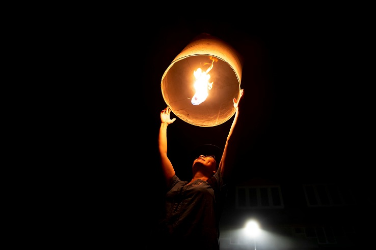

Embrace SATORI

Pause in the Moment
Feel the stillness around you. In this moment, there is nowhere else to be, only the quiet glow of light and the rhythm of your own reflection.
Breathe in
With every inhale, take in clarity and calm. With every exhale, release what no longer serves you.

Reconnect with Yourself
As the light rises, so do you. Reconnect with who you are and the peace that has always been within reach.